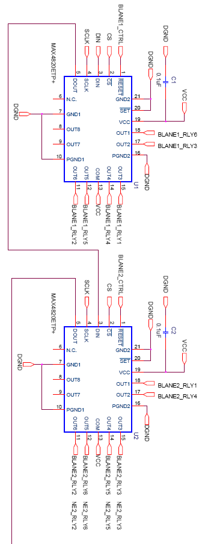
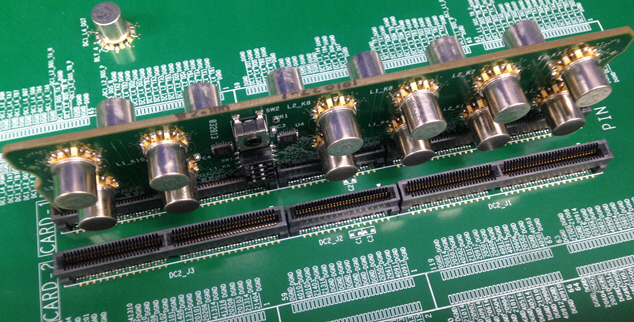

Relay drivers
In case you need to use a large number of relays that are switched at the same time, relay drivers can be the preferred solution.

|
This example schematic uses an 8-channel relay driver with built-in kick-back protection. It can drive non-latching or dual-coil-latching 3V...5V relays. Using only one utility line, each driver can operate up to 8 relays. Cascaded connection is allowed, and thus several of these cascaded drivers can operate a real large number of relays. The configuration example shows two cascaded relay drivers, each operating 6 relays. |
In the design example shown below - using 4 such cascaded relay drivers and each operating 6 relays - 24 cascaded relays are placed onto a small daughter-card. Several of these daughter-cards can be plugged perpendicularly onto the DUT board, in a modular manner.
Arranging the relays systematic-alternating on the daughter-cards, allows the sequential connection of several such daughter-cards to the DUT board. A smart, zig-zag layout requires only a very small area, controlled by one or few utility lines.
On the photo below, only one of two identical daughter-cards is installed. In the center front, the photo shows two of the small sized relay drivers, together with two larger differently sized mechanical switches. These can be manually set and were included to allow additional manual control.

Functional changes
- Introduced in SmarTest 7.3.1